Free to forkNo licence and no copyright claim: build this game under your own name, or lift one idea from it. Why?
Game overview
Lattice Walker is a 2D parkour platformer about walking through a megastructure so vast that nobody has mapped it: endless concrete, pipes and walkways, built and rebuilt by machines that never stopped. Most of the time it's a quiet trek. Now and then it isn't.
You play Kade, a troubleshooting agent for the authority that still runs the structure's core. Cut-off sectors need reconnecting, and every trip is a chain of generated rooms between a train station and a problem: a hive, a jammed machine, a gang, something huge. You find the way by asking strangers, and you carry a beam pistol that can punch through anything, which is exactly why you try not to use it.
It's strongly inspired by Tsutomu Nihei's manga BLAME!: its silent architecture, its lone wanderer and his impossible gun. The world, the cast and every name here are its own.
Target audience
Players who love the mood of vast, silent places, in BLAME!, Hollow Knight, Rain World or Inside, and who want to walk them rather than speedrun them.
They want atmosphere first and action in bursts: long calm stretches, a sudden fight, and a gun that makes them feel unstoppable for a moment.
The controls are keyboard and mouse with a lot of verbs (grapple, rocket boots, beam, shotgun, blade), but nothing is timed against you: slow motion is on the mouse wheel, and the item menu stops time.
Game's purpose
Beauty and wonder: vistas of impossible architecture, and never knowing what the next room holds.
Power: a weapon that cuts through anything, used with the restraint the world asks for.
Freedom and safety: a trip can't fail. Death is a detour, and every wall can be dug through.
Meaning: a city coming back online, sector by sector, and the stranded people it reaches.
It deliberately avoids draining rest (most rooms are calm) and your time (nothing you've done is ever lost).
Core concept
Procedurally generated platformers usually mean roguelite runs: a death sends you back to the start, and the run is tuned so you'll lose.
Here death is a detour: you wake in a ditch a few rooms away and walk back. A trip can take longer, but it can't fail.
There's no map. You cross a maze of generated rooms by asking people the way, like a route in Slay the Spire or FTL that you can only hear about. And above the trips, the structure itself is the job that never ends: there's always another dark sector to reconnect.
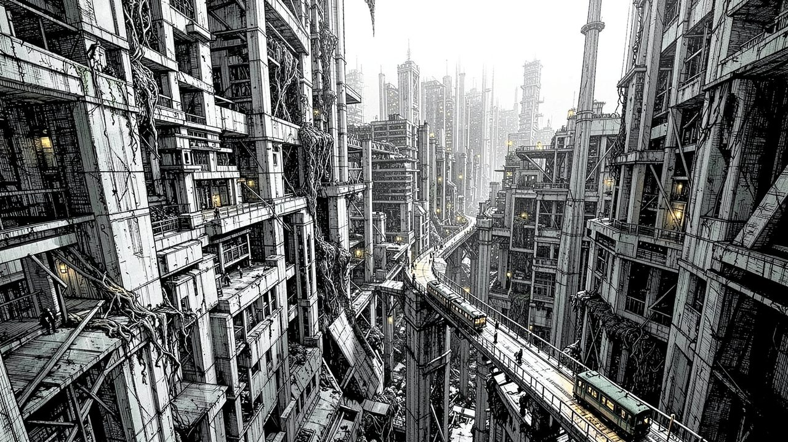
"Nobody has seen the edge of the structure. The machines that build it never stopped, and these days nobody can tell them to."
Lore and story
The structure
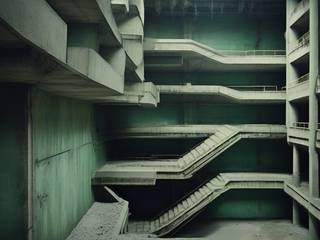
A city with no outside: stacked levels of concrete, pipes, walkways and shafts deeper than light reaches, extended without pause by the Masons, the machines that build it. Somewhere at its center is the core, where the Stewardship, the authority that runs the structure, still keeps the lights on.
Everyone in the structure used to be connected to the Lattice, its network. A connected person can digitize themselves and live on in the network's virtual spaces, or come back out in any body and style they like, mostly to hang out. Death was something you recovered from.
The outage
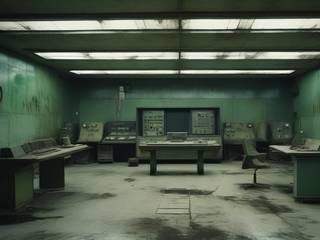
Not everyone wanted that. A fanatical sect, the Unplugged, believed digitizing destroys what makes a person human, and made sure nobody could do it: they caused the disaster that knocked most of the structure off the Lattice. Out in the disconnected sectors the Masons went haywire, "repairing" things into mazes, and the Stewardship's own guardians, cut off from their orders, turned hostile.
Others moved into the gap. The Chorus converts people into hive creatures, insisting it's more productive and closer to nature. The Glassborn turned themselves into crystalline silicon life. Ghosts of people who moved on to somewhere else still drift through the ruins, curious and strange. And in between are the stranded: ordinary people whose services were cut and who mostly want them back. They're kind and helpful, with the usual few jerks among them, and they have plenty of opinions about everyone's ideology.
The agent
Kade is one of the Stewardship's special agents: not a guard, more of a travelling sysadmin with an all-access pass to every cache and depot. Inside the structure's reach he draws power from its walls: he regenerates without end, he doesn't stay dead, and his Rift Emitter, a heavy beam pistol, can cut through anything the Masons ever made.
He's laconic, relaxed and in no hurry. Officially, he's looking for someone who still carries the Lattice gene, the trait that once let a person into the network without any hardware, and he opens every conversation the same way: "Do you carry the Lattice gene?" Nobody he asks has it. Most of them know something useful anyway. Unofficially, he'd settle for the next long elevator ride, with a driver who doesn't mind the company.
The job right now
Ride into a cut-off sector, find what's keeping it dark, deal with it, and ride out. Behind every sector Kade clears, the Stewardship moves in, reconnects it, and the people stranded there get the Lattice back. Then the next train leaves.
Controls and interface
You control Kade directly, in side view: a small figure in rooms a screen or two across. He moves with real momentum, air friction and terminal velocity, and he's deliberately unhurried. He walks, climbs and hangs, and bursts into action with dashes and rocket boosts that each have a moment of slowness after.
Move
A / D
Walk left and right
W / S
Jump and crouch; hold S and press W to drop through a platform
Shift
Lunge, backhop, or a floor slide from a crouch
Q
Rockets: prime a rocket jump, boost a slide, or thrust in mid-air
Fight
Mouse
Aim the gun, the grapple and the grab arm
Left click
Fire the Rift Emitter into the background at the pointer; hold to charge
Right hold
Raise it into the foreground; left click then fires a beam to the room's edge
F
Blade swipe, stronger the faster you're moving
Mouse 5
Shotgun
Hands
Mouse 4
Grapple: pull small things in, or pull yourself to big ones
E
Talk and interact; grab with the arm; hold to throw harder
Time
Wheel
Slow motion at a fifth of the speed, as long as you keep scrolling
Middle click
Time-freeze menu: shotguns, consumables, the beam's default power
Esc
Pause
The Rift Emitter has two ways to fire. By default a shot goes into the background, at the point under the pointer: a distant blast that still shakes the room, drops debris and can bring platforms down. Raise it into the foreground and each shot becomes a beam from Kade to the edge of the room, through everything in between. A shot fires when you let go of the button, so charging is just holding it; or set a default power level in the menu and fire on a cooldown instead.
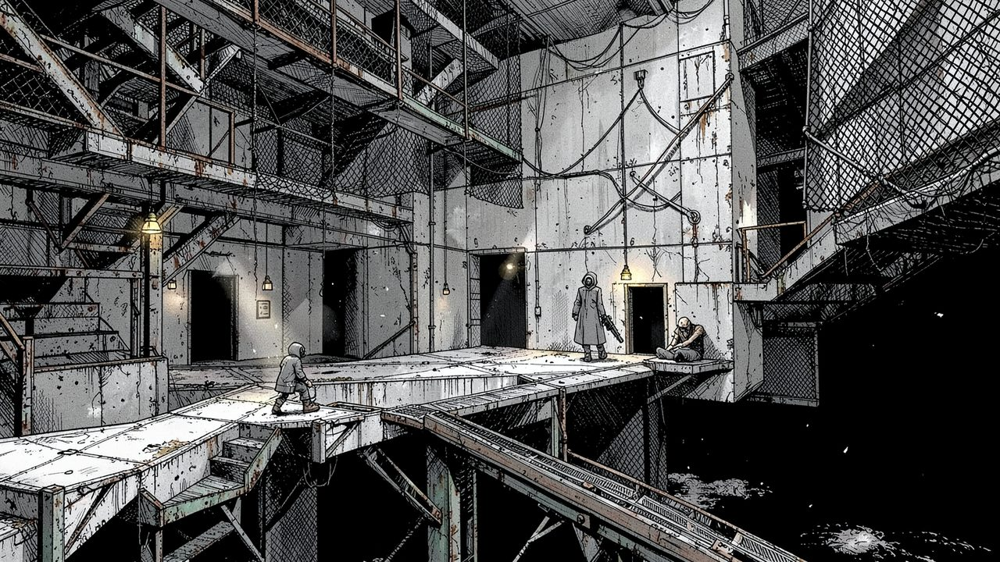
"Most rooms are a walk: a strange view, a stranger to ask, and a choice of exits."
Game layers
01 · Moment-to-moment
One room at a time
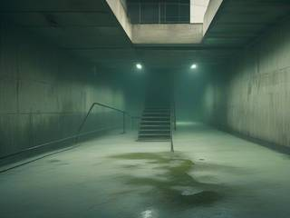
A room is a screen or two of generated megastructure: destructible concrete and pipe, fragile walkways and stairs, nets and ladders, an entry and one to three exits. Kade walks in, takes in the view, and looks for someone or something to ask: a person, a terminal, an infopad, a machine.
Usually that's all. Sometimes there's a creature, up close or far off in the background, and the room becomes a fight. Kade won't leave a room with hostiles still in it ("I haven't finished clearing this room yet"), so the fight is part of the way through.
02 · Low metagame
One trip into a sector
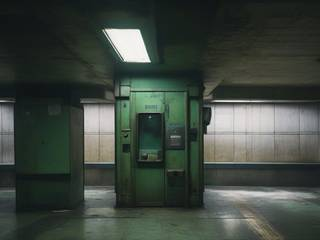
A campaign is a single trip. Kade arrives by elevator or train at a cut-off sector, works his way through rooms to the goal, deals with whatever is wrong there, and makes for the exit station that takes him out again.
The goal is one problem with a face: a hive, a hive with a boss, a jammed machine, an obstruction, a gang of bandits, a creepy recluse, a juggernaut, or a swarm that haunts the whole trip. If it beats him, it's still there when he comes back, in a different room.
03 · High metagame
Reconnecting the structure
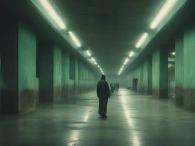
Every cleared sector goes back on the Lattice. The Stewardship moves in to secure it, its rogue guardians are restored or shut down, and the people stranded there can connect again: digitize, live in the network, or step back out in a new body and go hang out. There's always another dark sector further out.
Between rooms, the loading screen shows a new piece of art of Kade crossing the structure, so the trip draws itself as you go. The game also keeps your own album: screenshots of each trip's big moments, taken automatically and marked as yours, played back as a montage when a sector comes back online. It's a record, not a prize.
04 · Practical game flow
A trip in an evening
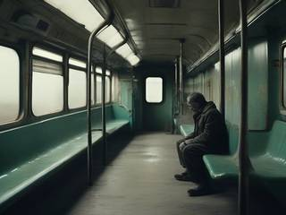
Launch to the mission cards: a few trips on offer, each with its task and its intensity, reshuffled every time unless you lock the ones you like. Pick one and ride in.
A room takes a few minutes, and you can stop in any of them: the trip waits where you left it. A calm trip is a slow evening's walk; an intense one is shorter and louder.
Game modes
There's one game, the trips, and two ways to change how it plays. How hard a trip is comes mostly from the mission card you pick: its intensity decides how much of the trip is calm walking and how much is fighting.
Mode
What it is
Changes the structure?
Trips
The main game: pick a mission card, its task and intensity, and ride into a sector. Each one you clear stays reconnected.
Yes
Flashback
Paste a finished trip's seed and play it again as a story Kade is telling someone, with cheats and new-game-plus mutators to switch on.
No, it's a retelling
Heavy mode
An optional setting for players who want harder fights: Kade is more sluggish and the beam's limits are tighter, or the beam is even more overpowered and its side effects worse, so the shotgun and the blade do more of the work.
Yes
Features and mechanics
The heart of it
The Rift Emitter
Kade's beam pistol is overkill at its lowest setting. Anything the beam touches rips apart: terrain, defenses, creatures. Nothing stops it, one hit kills anything, it never runs out, and it can fire as fast as you click.
Charging widens the beam from 16 to 32 to 48 pixels. Keep holding long past that and a limit break kicks in, the way the Vector Cannon does in Zone of the Enders: a 96-pixel beam that's frankly absurd. Shots into the background grow the same way, in blast radius and in after-effects: more debris, earthquakes, a lingering warp in gravity.
Every shot has weight. The room shakes, debris rains down and the light flashes, even when the target is a hive tower half a kilometer back.
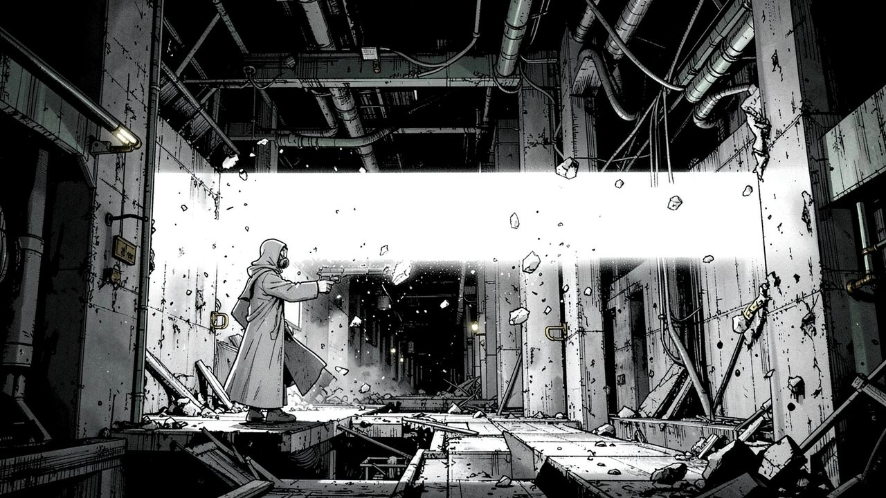
"Fired into the distance, it shakes the room. Fired across it, it takes the floor with it."
Power with a price
Every shot costs the structure
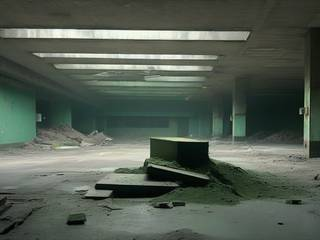
The Rift Emitter is like swearing: fine now and then, a problem if it's all you do. Each room has an acceptable amount of use, roughly two shots per medium-sized enemy plus two spare in the foreground, and ten times that into the background.
Go past it and the damage spreads. Other rooms of the trip take the collateral, and the rogue guardians start paying attention, like the police in GTA: the more heat, the more of them. Nothing forbids the beam. The world simply reacts to it, which leaves the question of when it's worth it to you.
Navigation by conversation
Asking for directions
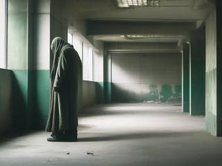
There's no map. A room with more than one exit always holds at least one clue: a stranger sitting somewhere, a terminal, an infopad, a machine. Kade asks his question, and the answer is nearly always "No, but…" followed by something useful: which exit leads on, where there's a shortcut.
Good information gets you closer. Bad information sends you on a detour of two to seven rooms, which isn't all bad: detours can hold food bricks, ammunition, kits, lore or a clue to a shortcut, and you might take one on purpose for a chance at them. Some people talk gibberish, and you leave them be. A few lie on purpose, and you may run into them again later. What you do about it is up to you, though the local enforcers don't much care who started it.
The structure also leaves things lying around: datalogs, bite-sized snippets about science, technology and possible futures, the kind of short "huh, really?" read that suits a quiet room. They come in a cycle, so none repeats until you've read them all.
A maze without a map
Nodes and the paths between them
Behind the scenes, a trip is an invisible network of landmark nodes, and the rooms Kade stumbles through are the ways between them:
Node
What's there
Sector entry
The train or elevator stop that brought Kade in
Goal
The trip's problem: a boss, a machine, an objective
Sector exit
The station that takes Kade out and ends the trip
Ditch
Where Kade wakes after a blackout: the bottom of the barrel, little danger, the only way is up
Cache
An uncommon stash of consumables and extras that runs dry after one to four visits ("out of service")
Vista
A scenic, quiet place: somber, odd, epic, creepy, tranquil or simply bland
Between nodes run chains of pathway rooms, anywhere from one room to nine, with shortcuts and long ways round of their own. About eight in ten are calm, though now and then one is wilder than any landmark. Each next room follows from the last, the way Star Fox's routes do: in its direction, and in whether it's indoors, outdoors or both.
A landmark isn't one fixed room. It's a place with endless vantage points. Come back to a boss after a blackout and it's the same place, with the same occupants, approached from a fresh, newly generated angle.
Generated, then wrecked
Rooms that can't trap you
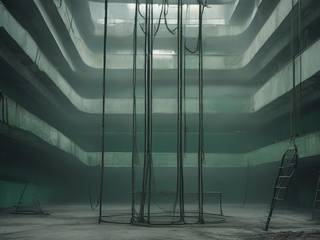
Each room is built in order. First the entry and exits, each standing on a one-way platform frame, with enough hook points, climbing nets and walls to guarantee a route between them even if everything else is blown away. Then the solid terrain, then props cut into it, then the backdrop: an interior, an exterior with one to three parallax layers, or a mix of both.
Interior rooms have solid edges. Exterior rooms open onto a bottomless drop, like a Smash Bros stage. The terrain is smooth, chunky destructible concrete and pipe, so every crater is a real shape you can stand in.
The generator tries to leave at least one path that doesn't need the beam, in case it's been stolen. And since the blade and the shotgun never run out, Kade can always dig his way to an exit.
Time doesn't rewind
Death is a detour
Kade has 200 hit points and regenerates one every second, always. If damage outpaces that, he blacks out and wakes in a ditch room, walks one to five rooms back, finds whatever took him down and settles it. After that, the trip carries on as if he'd passed that room the first time.
Sometimes the thing that beat him has taken his Rift Emitter. Depending on what it is, it might fire it again and again at a slow rate, fire once and get blown away by the recoil, not manage it at all, or have it fly out of its hands and stick in a net where Kade can climb to it.
Falling or being knocked off the edge of an exterior room is milder: a short swear, and a few seconds later Kade crawls back in through the entrance. Some monsters are finished for good by throwing them out; the stubborn ones crawl back in through an exit, just like him.
Slow, then sudden
Parkour with a wind-down
Kade is mostly grounded and moves on terrain, grapple points and nets. He's no tireless bunny-hopper: everything has a cooldown, so bursts of speed are short and violent and then he's relaxed again.
His verbs: walk, crouch, lunge, backhop, floor slide, climb nets and ladders, jump, rocket-slide, rocket-jump and rocket-fly, drift in zero gravity on thrusters, grapple small things toward him or pull himself to big things and latch on, and grab and throw. Rocket fuel is limited and carries over from room to room, while the small impulse thrusters recharge forever, so dodging never runs out.
Rooms bend the rules too: gravity that varies, moving platforms and mini elevators, fans that blow and ducts that suck, surfaces with sideways gravity, spinning platforms, orbital gravity spheres.
The pockets
Shotguns and consumables
When the beam is too much, there's a blade and a shotgun. The blade is a short, blunt, superheated slab that knocks things back, and it hits harder the faster Kade is moving relative to his target. The default shotgun is plain and dependable.
Power-ups turn it into something else for a while, in the spirit of Time Crisis and Metal Slug: rapid auto, quad barrel, tri-barrel burst, flame, explosive, laser, remote grenade, sticky mine, plasma bomb, smart auto-aim, force, arc lightning, slicer, hypervelocity, cannonball, minigun, black hole, nuke and more, each with limited ammunition before it reverts. Kade carries up to four shotguns and four consumables, picked from a menu that freezes time, as in Super Mario Bros. 3.
Consumable
What it does
Rocket fuel
Refills the boots
Food bricks
Faster stamina recharge and shorter cooldowns
Health kit
Instant healing, instead of waiting for the regeneration
Ammo
Reloads the current shotgun
Reactive bricks
Passive: instantly kill a melee attacker and soak up heavy hits
Deflector orb
Passive: a number of light projectiles pass through Kade as if he weren't there
Shock vest
Absorbs three quarters of incoming damage until it's spent
Most come in small, medium and large, and some stack.
Everyone plays by the same rules
A structure that pushes back
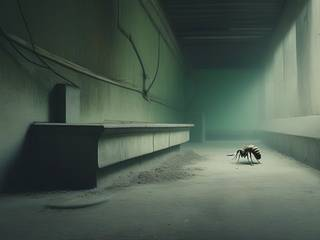
Background enemies sit far off: conversion towers, hives, bombardment and sniper units. Some start in the distance and come forward, and go back again. Foreground creatures climb, crawl, jump, hang and run the way Kade does, each with one or two attacks and one job that makes trouble: putting up an obstacle, getting in the way, or wrecking the very clue Kade came to ask.
Hazards are everywhere: radiation pylons, crushers, grinders, hot exhaust, explosive tanks, molten metal, live surfaces, ice, sticky fungus, rebar spikes, mines, lasers, zero-gravity fields and dumb little turret bots. They hurt monsters and enforcers exactly as much as they hurt Kade, so the room itself is a weapon.
Civilians are the complication. Monsters will eat them and so will a careless shot, and every innocent killed calls in local enforcer bots that attack Kade and the monsters alike. When they show up the room turns to chaos: stay and fight the wave, or run for the nearest exit.
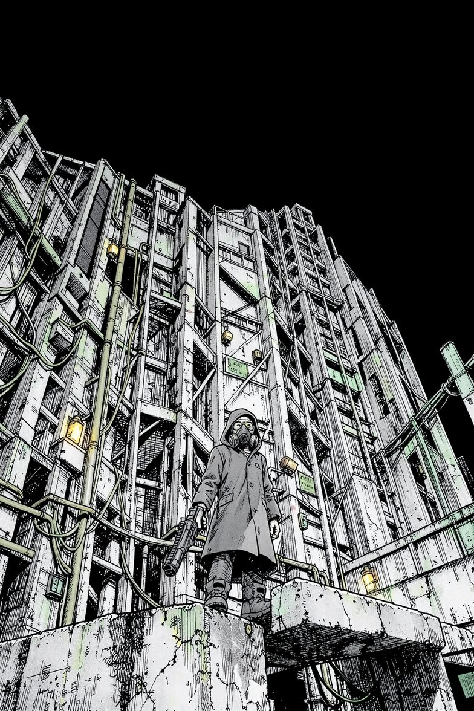
Next train leaving
Lattice Walker: Megastructure Parkour Trek
A sector has gone dark. Its machines are building mazes, its guardians shoot on sight, and the people stranded there want their lives back. Somebody has to walk in.
You have a train ticket, a body that won't stay down, a shotgun with ideas, and a beam pistol you should fire far less often than you'll want to. Ask the way. Take the detour. Ride out.